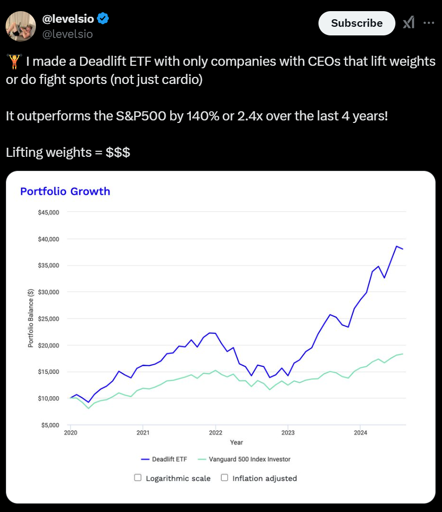
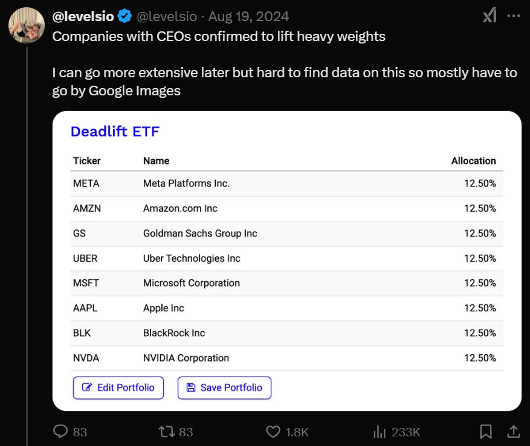

tq_mutate(.data, #The object you are performing the calculations
selected_variables, #The columns to send to the mutation function
mutate_fun, #The mutation function from either the xts, quantmod, or TTR package.
col_rename #A string or character vector containing names that can be used to quickly rename columns
) Manipulating time series Data
Lucas S. Macoris
Outline
- This lecture is mainly based the following textbooks:
- Tidy Finance (Scheuch, Voigt, and Weiss 2023)
- R for Data Science (Wickham, Mine Cetinkaya-Rundel, and Grolemund 2023)
Coding Replications
For coding replications, whenever applicable, please follow this page or hover on the specific slides with containing coding chunks.
- Ensure that you have your session properly set-up according to the instructions outlined in the course webpage
- Along with the slides, this lecture will also contain a replication file, in
.qmdformat, containing a thorough discussion for all examples that have been showcased. This file, that will be posted on eClass®, can be downloaded and replicated on your side. To do that, download the file, open it up in RStudio, and render the Quarto document using the Render button (shortcut:Ctrl+Shift+K). - At the end of this lecture, you will be prompted with a hands-on exercise to test your skills using the tools you’ve learned as you made your way through the slides. A suggested solution will be provided in the replication file.
Organizing Financial Data
In the previous lecture, you worked your way through the exercises by using the amazing
dplyrfunctionalities ondata.framesIn some cases, you had to do some workarounds with
drop_na(),slice_tail()andlag()simply because you were manipulating time series dataIn this lecture, you will be introduced to a particular type of class in
R:xts
Definition
xts is an R package that provides an extension of the zoo class, a class with methods for totally ordered indexed observations - in special, time series
With
xts, you get a lot of flexibility in handling time series observations that are of interest of financial analysts, such as:- Subsetting data by years/months/days
- Calculating rolling functions (e.g, yearly averages)
- Aggregating data at different intervals (e.g, convert daily to weekly prices)
Question: but wait, why are we departing from dplyr?
Bridging the tidyverse with time series
Unfortunately, there is an issue: the
tidyverseis not fully designed to work with time series classes, such asxtsandzooAs a consequence, you won’t be able to use a lot of interesting functionalities that would perfectly apply for time series
But don’t you worry, I got you covered: the
tidyquantpackage1 integrates the best resources for collecting and analyzing financial dataIt integrates several financial packages, like
zoo,xts,quantmod,TTR, andPerformanceAnalytics, with the tidy data infrastructure of thetidyverse, allowing for seamless interaction between each
You can now perform complete financial analyses using the same functionalities you’ve learned so far!
The tidyquant package, a short-video
The tq_mutate() function
Definition
The tq_mutate() function adds adds new variables to an existing tibble;
- The main advantage is the results are returned as a
tibbleand the function can be used with thetidyverse - It is used when you expected additional columns to be added to the resulting data frame
- You can use several time series related functions from other
Rpackages - calltq_mutate_fun_options()to see the list of available options - All in all, it is similar in spirit to
mutate()
The tq_transmute() function
Definition
The tq_transmute() returns only newly created columns and is typically used when periodicity changes.
tq_mutate(.data, #The object you are performing the calculations
selected_variables, #The columns to send to the mutation function
mutate_fun, #The mutation function from either the xts, quantmod, or TTR package.
col_rename #A string or character vector containing names that can be used to quickly rename columns
)tq_transmute()works exactly liketq_mutate()except it only returns the newly created columns- This is helpful when changing periodicity where the new columns would not have the same number of rows as the original tibble
- All in all, it is similar in spirit to
summarize()
Working with time series objects, Exercise I
- An immediate useful example of using a time series specific functionality with a tidyverse logic relates to filtering:
- Sometimes, we may be interested in getting only a subset of the data (for example, only GOOG information)
- Furthermore, we may be interested in subsetting only a specific time frame for our analysis
- It is relatively straightforward to do it with
tidyquant:- Use
filter()to select only rows wheresymbol=='GOOG' - In the same call, filter for
date>=min_dateanddate<=max_date
- Use
Working with time series objects, Exercise I
# A tibble: 1,258 × 8
symbol date open high low close volume adjusted
<chr> <date> <dbl> <dbl> <dbl> <dbl> <dbl> <dbl>
1 GOOG 2020-01-02 67.1 68.4 67.1 68.4 28132000 68.1
2 GOOG 2020-01-03 67.4 68.6 67.3 68.0 23728000 67.8
3 GOOG 2020-01-06 67.5 69.8 67.5 69.7 34646000 69.5
4 GOOG 2020-01-07 69.9 70.1 69.5 69.7 30054000 69.4
5 GOOG 2020-01-08 69.6 70.6 69.5 70.2 30560000 70.0
6 GOOG 2020-01-09 71.0 71.4 70.5 71.0 30018000 70.7
7 GOOG 2020-01-10 71.4 71.7 70.9 71.5 36414000 71.2
8 GOOG 2020-01-13 71.8 72.0 71.3 72.0 33046000 71.7
9 GOOG 2020-01-14 72.0 72.1 71.4 71.5 31178000 71.3
10 GOOG 2020-01-15 71.5 72.1 71.5 72.0 25654000 71.7
# ℹ 1,248 more rowsWorking with time series objects, Exercise II
- Another example of using a time series specific functionality is working with leads and lags:
- Sometimes, we need to shift our variables by a specific interval, like getting the previous day’s price
- Say, for example, that you want to understand how S&P returns levels relate to NFLX returns one-week ahead
- It is relatively straightforward to do it with
tidyquant:- Download S&P500 and NFLX data using the
tq_get()function - Use
tq_transmute()to compute the weekly returns for each security based on daily data - Use
tq_mutate()to generate a lagged series of S&P500 returns
- Download S&P500 and NFLX data using the
Working with time series objects, Exercise II
#Assuming you have already loaded the tidyquant and the tidyverse packages
#Netflix Data
NFLX=tq_get('NFLX')%>%
#Select only the necessary columns
select(date,symbol,adjusted)%>%
#Apply the weeklyReturn function and call the new column 'NFLX'
tq_transmute(mutate_fun = weeklyReturn,
col_rename = 'NFLX')
#S&P Data
SP500=tq_get('^GSPC')%>%
#Select only the necessary columns
select(date,symbol,adjusted)%>%
#Apply the weeklyReturn function and call the new column 'SP500'
tq_transmute(mutate_fun = weeklyReturn,
col_rename = 'SP500')%>%
#Apply the lag function for n=1 week and call the new column 'SP500'
tq_transmute(mutate_fun = lag.xts,
n=1,
col_rename = 'SP500')%>%
#Drop all rows with NA information (row 1, in this case)
drop_na()
#Merge Data
inner_join(NFLX,SP500)# A tibble: 528 × 3
date NFLX SP500
<date> <dbl> <dbl>
1 2015-01-09 -0.0563 0
2 2015-01-16 0.0244 -0.00651
3 2015-01-23 0.297 -0.0124
4 2015-01-30 0.00992 0.0160
5 2015-02-06 0.00579 -0.0277
6 2015-02-13 0.0489 0.0303
7 2015-02-20 0.0260 0.0202
8 2015-02-27 -0.00688 0.00635
9 2015-03-06 -0.0438 -0.00275
10 2015-03-13 -0.0346 -0.0158
# ℹ 518 more rowsWorking with time series objects, Exercise III
- Finance practitioners are often asked to perform analysis on a rolling basis:
- We may want to calculate a given signal on day \(t\) based on past \(x\) periods of information
- Say, for example, that you want to calculate a simple and exponential moving average of adjusted prices from 5 days back for a given stock
- It is relatively straightforward to do it with
tidyquant:- Download stock data using the
tq_get()function - Use
tq_mutate()twice along with theSMA()andEMA()functions settingn=5
- Download stock data using the
Working with time series objects, Exercise III
# A tibble: 2,542 × 5
# Groups: symbol [1]
symbol date adjusted SMA EMA
<chr> <date> <dbl> <dbl> <dbl>
1 AMZN 2015-01-02 15.4 NA NA
2 AMZN 2015-01-05 15.1 NA NA
3 AMZN 2015-01-06 14.8 NA NA
4 AMZN 2015-01-07 14.9 NA NA
5 AMZN 2015-01-08 15.0 15.0 15.0
6 AMZN 2015-01-09 14.8 14.9 15.0
7 AMZN 2015-01-12 14.6 14.8 14.8
8 AMZN 2015-01-13 14.7 14.8 14.8
9 AMZN 2015-01-14 14.7 14.8 14.8
10 AMZN 2015-01-15 14.3 14.6 14.6
# ℹ 2,532 more rowsWorking with time series objects, Exercise IV
Lastly, financial analysts often cover a collection of securities on a rolling basis
For example, a buy-side analyst will monitor stocks from a given industry so as to understand which ones are overvalued, and which ones are undervalued
Say, for example, that you want to focus on a subset of 4 stocks, and you need to compare the cumulative return up to the latest closing price
It is easy to integrate the
tidyquantfunctions along with thegroup_by()function you’ve learned when working withdplyr:- Get the information using
tq_get() - Group the data by
symbol - Apply the
tq_mutateandtq_transmutefunctions to pass time series functions to the data - in this case, thedailyReturn()and theReturn.cumulative()function
- Get the information using
Working with time series objects, Exercise III
#Assuming you have already loaded the tidyquant and the tidyverse packages
#Set up the list of assets
assets=c('AMZN','GOOG','META','GME')
assets%>%
tq_get()%>%
select(date,symbol,adjusted)%>%
group_by(symbol)%>%
tq_mutate(adjusted, mutate_fun = dailyReturn,col_rename = 'daily_return')%>%
tq_transmute(daily_return,mutate_fun = Return.cumulative)%>%
mutate(across(where(is.numeric),percent,big.mark='.'))%>%
setNames(c('Ticker','Cumulative Return up-to-date'))# A tibble: 4 × 2
# Groups: Ticker [4]
Ticker `Cumulative Return up-to-date`
<chr> <chr>
1 AMZN 1 411%
2 GOOG 622%
3 META 818%
4 GME 331% Wrapping-up on tidyquant
There is so much you can use from
tidyquantin your journey as a quantitative financial analyst:I strongly recommend looking at all the predefined functions supported by
tidyquant- click here for a detailed discussion around all supported functionsYou can also customize your own functions that work with time series (for example, your secret trading indicator) and pass it over through
tq_mutate()ortq_transmute()
In the package’s official website, you can find a variety of examples to nurture your creativity around what you can do using this package
All in all, that’s the motto: time series analysis made easy with
tidyquantand thetidyverse
Does getting ripped increase returns?


\(\rightarrow\) See Deadlift: The ETF World’s Latest Headscratcher
Hands-On Exercise
Your manager (who did not lift any weights past the last 5 years) wanted to replicate the returns of the Deadlift ETF from 2020 to 2024. You job is to create a simple table of yearly returns comparing the Deadlift ETF vis-a-vis the S&P500 Index
Follow the instructions and answer to the following questions:
- When looking at the yearly results from both the Deadlift ETF and S&P500, which one did perform better?
- What are the potential explanations for the result you have found?
To answer to these questions, you will be using the a combination of
dplyrandtidyquantfunctions you have learned so farThe expected result is a
data.frameobject that shows both the Deadlift ETF as well as the S&P500 returns (columns) on a yearly basis (rows)
\(\rightarrow\) Suggested solution will be provided in the replication file for this lecture.
Hands-On Exercise, continued
Exercise
Before you start, make sure to have the tidyverse and the tidyquant packages loaded in your session. Following the instructions from the previous lectures, you can either make a direct call to each package, library(tidyverse) and library(tidyquant), or copy-paste the script from the course’s official website.
- Use
tq_get()to load information from the S&P Index and the Deadlift ETF constituents in two separate objects. You can use the code^GSPCto retrieve information for the index, and you can pass a vectorc('ticker1','ticker2',...,'ticker_n')to get information on the Deadlift ETF constituents - Filter for observations starting between 2020 (beginning of) and 2024 (end of) using the
fromandtoarguments of thetq_get()function - Group the Deadlift ETF data by
symbolusing thegroup_by()function - For both data sets, create a
yearly_retvariable that calculates the yearly return of a given security. You can use thetq_transmute()function, passing theyearlyReturn()function along the chain - For the Deadlift data set, regroup the data by
dateand calculate the Deadlift returns using amutate()function (Hint: it is an equally weighted portfolio) - Merge both datasets using
inner_join()
References
Scheuch, Christoph, Stefan Voigt, and Patrick Weiss. 2023. Tidy Finance with R. Chapman & Hall/CRC. https://www.tidy-finance.org/r/.
Wickham, Hadley, Mine Cetinkaya-Rundel, and Garrett Grolemund. 2023. R for Data Science. O’Reilly Media. https://r4ds.had.co.nz/.